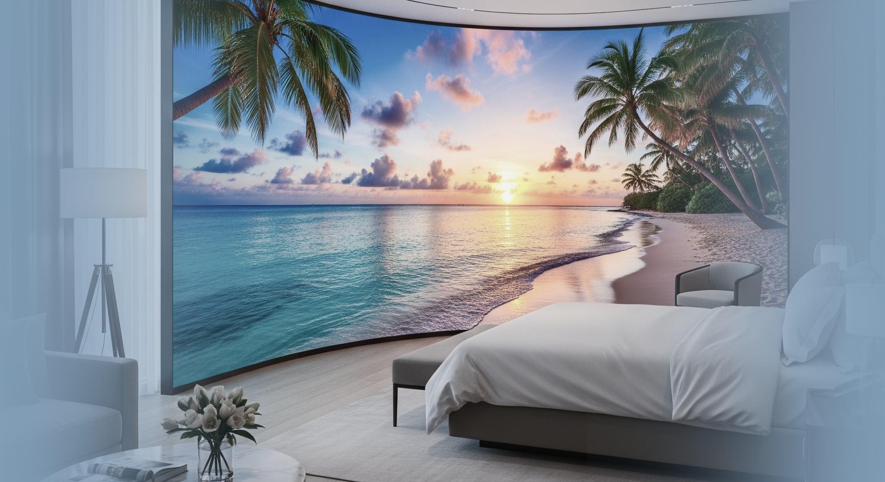
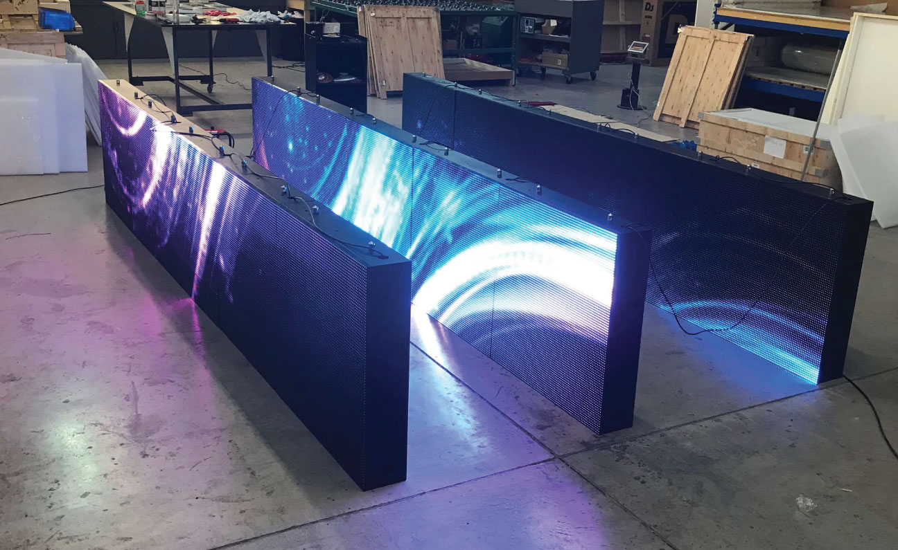
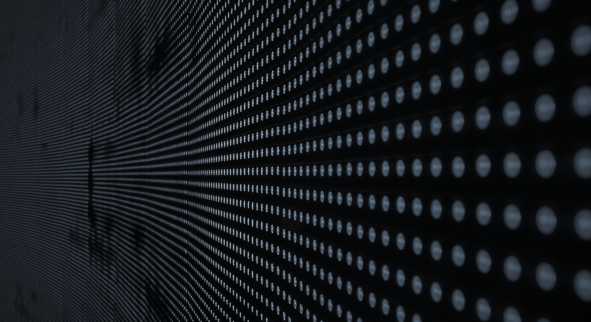

The First LED Wall Display

What is Dreamlayer?
Dreamlayer is an impact-protected modular LED wall display with a integrated diffusion surface. Always creating a unique and personalized experience for the user, though also making sure those experiences can last beyond a lifetime. It's the wallpaper of the future where you're entire screen can stretched across the room for all of your entertainment or simply make you feel you're in a different part of the world.


Here's all the layers to make it one-of-a-kind and dense as concrete:
- Outer Shell Diffusion Layer - created with semi-matte or frosted finished layer that reduces glare, softens over-bright visuals, and improves legibility across viewing angles.
- Transparent Impact-Dampening Layer - a high-clarity, shock-absorbing material (e.g. laminated polycarbonate or TPU-based composite) that protects the microLED surface from physical trauma.
- Modular microLED Display Units - High-definition LED panels that are able mend and scale to form any digital surface needed.
- Mounting Grid Frame - A structural backplate that holds the modular microLED tiles in place and supports internal cable routing and cooling.